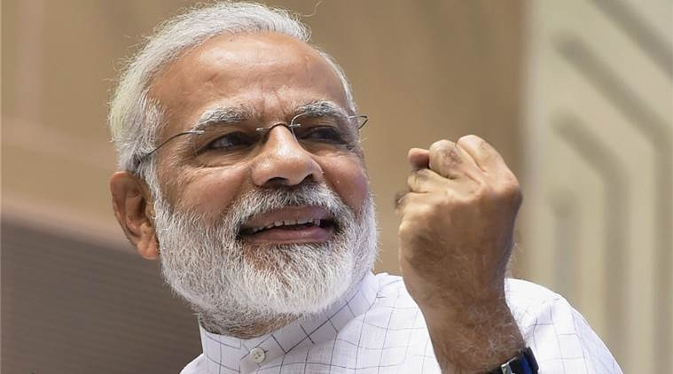

Names of 5 Role Models that can be good for me:
-
Bill Gates
-
Narendra Modi
-
Jack Ma
-
Jeff Bezos
-
Virat Kohli
Q. What is a Role Model?
A. A Role Model is a person that we like to follow in our life. It can be a person, animal or even a thing. The fact is just it can be thing which motivates a person.
Q. How it benefits to a B.Tech graduate?
A. It can help me achieve my goals easily and stay focused in my job,career and in life as well.
Q. What are the characteristics of potential role model?
A. As per Opinins:It must have a good effect on the life of the person. As a person he/she must be hardworking, dedicated, inspiational. These qualities can be there for a good role model.

Narendra Damodardas Modi (Gujarati, born 17 September 1950) is an Indian politician serving as the 14th and current Prime Minister of India since 2014. He was the Chief Minister of Gujarat from 2001 to 2014, and is the Member of Parliament for Varanasi. Modi, a member of the Bharatiya Janata Party (BJP), is a Hindu nationalist and member of the right-wing Rashtriya Swayamsevak Sangh (RSS).
Born to a Gujarati family in Vadnagar, Modi helped his father sell tea as a child and later ran his own stall. He was introduced to the RSS at the age of eight, beginning a long association with the organisation. He left home after graduating from school, partly because of an arranged marriage which he rejected. Modi travelled around India for two years and visited a number of religious centres. He returned to Gujarat and moved to Ahmedabad in 1969 or 1970. In 1971 he became a full-time worker for the RSS. During the state of emergency imposed across the country in 1975, Modi was forced to go into hiding. The RSS assigned him to the BJP in 1985, and he held several positions within the party hierarchy until 2001, rising to the rank of general secretary.
Modi was appointed Chief Minister of Gujarat in 2001, due to Keshubhai Patel's failing health and poor public image following the earthquake in Bhuj. Modi was elected to the legislative assembly soon after. His administration has been considered complicit in the 2002 Gujarat riots, or otherwise criticised for its handling of it, however a Supreme Court-appointed Special Investigation Team (SIT) found no evidence to initiate prosecution proceedings. His policies as chief minister, credited with encouraging economic growth, have received praise. His administration has been criticised for failing to significantly improve health, poverty, and education indices in the state.
Modi led the BJP in the 2014 general election, which gave the party a majority in the Lok Sabha, the first time a single party had achieved this since 1984. Modi himself was elected to parliament from Varanasi. Since taking office, Modi's administration has tried to raise foreign direct investment in the Indian economy, increased spending on infrastructure, and reduced spending on healthcare and social welfare programmes. Modi has attempted to improve efficiency in the bureaucracy, and centralised power by abolishing the planning commission and replacing it with the NITI Aayog. He has begun a high-profile sanitation campaign, and weakened or abolished environmental and labour laws. Credited with engineering a political realignment towards right-wing politics, Modi remains a figure of controversy domestically and internationally over his Hindu nationalist beliefs and his role during the 2002 Gujarat riots, cited as evidence of an exclusionary social agenda.
Reasons for Selection:
-
Hardworking
-
Punctual
-
Dedication towards his work
-
Intelligence and Sharp-Mindedness
-
Leadership Qualities